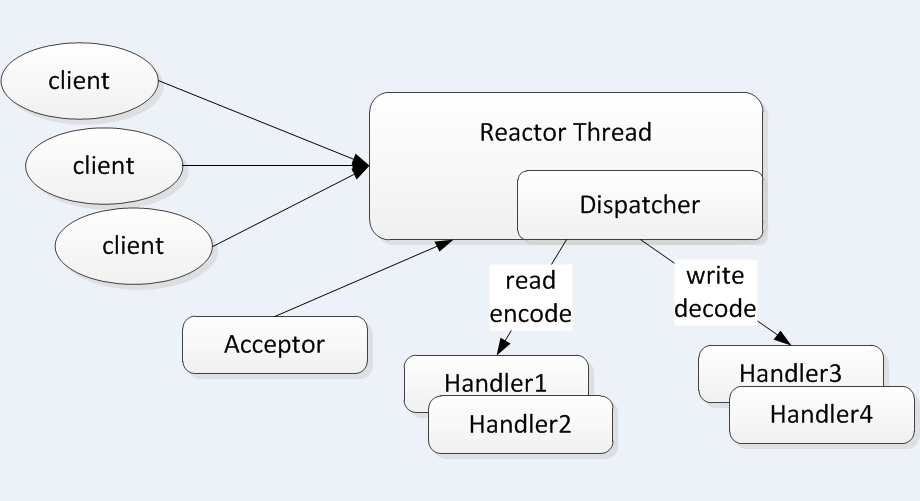
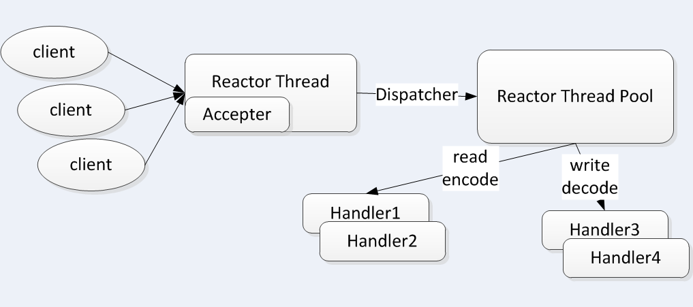
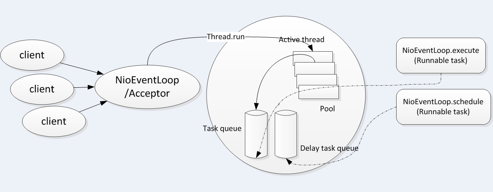

Netty框架的主要线程就是I/O线程，线程模型设计的好坏，决定了系统的吞吐量、并发性和安全性等架构质量属性。
Netty线程模型设计以两点为主要目标：并发性能、锁避免。局部的无锁化和事件驱动的多路复用技术。
首先，来学习下Netty的线程模型，next，通过对Nio线程NioEventLoop的源码分析，来了解下Netty对于I/O相关的多线程设计原理与实现。
Netty线程模型
不同的NIO框架对于Reactor模式的实现存在差异，但本质上还是遵循了Reactor的基础线程模型。
I/O多路复用机制都依赖于一个事件分发器，事件分离器把接收到的客户事件分发到不同的事件处理器中.
Reactor单线程模型
指所有的I/O操作都在同一NIO线程上面完成。NIO线程的职责如下：
- 作为NIO服务端，接受客户端的TCP连接
- 作为NIO客户端，向服务端发起TCP连接
- 读取通信对端的请求或者应答消息
- 向通信对端发送消息或者应答消息

由于Reactor的异步非阻塞I/O模型，所有的I/O操作都不会导致阻塞，理论上一个线程可以独立处理所有I/O相关的操作。
数据流通过Accepter类接受客户端的TCP连接请求消息，当链路建立成功之后，通过Dispatch将对应的ByteBuffer派发到指定的Handler上，进行消息解码。用户消息编码后通过NIO线程将消息发送给客户端。
小容量的应用场景，可以使用单线程模型。但对于高负载、大并发的应用场景并不适合，主要原因如下：
- 一个NIO线程同时处理成百上千的链路，性能上无法支撑，即便NIO线程的CPU负荷达到100%，也无法满足海量消息的编解码、读取和发送。
- 当NIO线程负载过重之后，处理速度将变慢，会导致大量客户端连接超时，超时之后往往会重发，这更加重了NIO线程的负载，最终会导致大量消息积压和处理超时时，成为系统的性能瓶颈。
- 可靠性问题：一旦NIO线程意外跑飞，或者进入死循环，会导致整个系统通信模块不可用不能接受和处理外部消息，造成节点故障。
为了解决以上问题，演进出了Reactor多线程模型。
Reactor多线程模型
Reactor多线程模型与单线程模型最大的区别在于有一组NIO线程来处理I/O操作，它的原理如下图：

多线程模型的特点总结如下：
- 有专门一个NIO线程（Acceptor线程），用于监听服务端，接受客户端的TCP连接请求
- 网络I/O操作（读、写等）由一个NIO线程池负责。线程池可以采用标准的JDK线程池实现，它包含一个任务队列和N个可用的线程，由这些NIO线程负责消息的读取、编解码和发送。
- 一个NIO线程可以同时处理N条链路，但一个链路只对应一个NIO线程，防止发生并发操作问题。
在绝大多数场景下，Reactor多线程模型可以满足性能需求。但在个别的特殊场景下，一个NIO线程负责监听和处理所有的客户端连接可能存在性能问题。比如：并发百万的客户端连接、服务端需要对客户端握手进行安全认证。
这些场景下，单独一个Accepter线程可能存在性能不足的问题，为了解决性能问题，产生了第三种Reactor线程模型（主从Reactor多线程模型）
主从Reactor多线程模型
主从Reactor线程模型的特点是：服务器用户接受客户端连接的不再是一个单独的NIO线程，而是一个独立的NIO线程池。Accepter接收到客户端连接请求并处理完成后，交由I/O线程池处理读写等I/O操作以及编解码。Accepter线程池仅仅用于客户端的登录、握手和安全认证，一旦链路建立成功，就将链路注册到后端subReactor线程池的I/O线程上。
利用主从NIO线程模型，可以解决一个服务端监听线程无法有效处理所有客户端连接的性能不足问题。因此，在Netty的官方demo中，推荐使用该线程模型。
Netty的线程模型
Netty的线程模型并不是一成不变的，它取决于用户的启动参数配置。通过设置不同的启动参数，Netty可以同时支持Reactor但线程模型、多线程模型和主从Reactor多线程模型。

上图为Netty的线程模型，下面是Netty服务端的启动代码：
1 | //Configure the server. |
服务端启动的时候，创建两个NIOEventLoopGroup，它们实际是两个独立的Reator线程池。一个用于接受客户端的TCP连接，另一个用于处理I/O相关的读写操作，或者执行系统Task、定时任务Task等。
Netty用于接受客户端请求的线程池职责如下：
- 接受客户端TCP连接，初始化Channel参数
- 将链路状态变更事件通知给ChannelPipeline
Netty处理I/O操作的Reactor线程池责任如下：
- 异步读取通信对端的数据报，发送读事件到ChannelPipeline
- 异步发送消息到通信对端，调用ChannelPipeline的消息发送接口
- 执行系统调用Task
- 执行定时任务Task，例如链路空闲状态监测定时任务
通过调整线程池的线程个数、是否共享线程池等方式，Netty的Reactor线程模型可以在单线程、多线程和主从多线程间切换，这种灵活的配置方式可以最大程度的满足用户的个性化定制。
为了尽可能的提升性能，Netty在很多地方进行了无锁化的设计，例如在I/O线程内部串行操作，避免多线程竞争导致的性能下降问题。表面看，串行化设计似乎CPU利用率不高，并发程度不够，但是，通过调整NIO线程池的线程参数，可以同时启动多个串行化的线程并行运行，这种局部无锁化的串行线程设计相比一个队列、多个工作线程的模型性能更优。
Netty多线程编程最佳实践
- 创建两个NioEventLoopGroup，用于逻辑隔离NIO Acceptor和NIO I/O线程。
- 尽量不要在ChannelHandler中启动用户线程（解码后用于将POJO消息派发到后端业务线程的除外）
- 解码要放在NIO线程调用的解码Handler中进行，不要切换到用户线程中完成消息的解码。
- 如果业务逻辑操作非常简单，没有复杂的业务逻辑计算，没有可能会导致线程被阻塞的磁盘操作、数据库操作、网络操作等，可以直接在NIO线程上完成业务逻辑编排，不需要切换到用户线程
-如果业务逻辑处理复杂，不要在NIO线程上完成，建议将解码后的POJO消息封装成Task，派发到业务线程池中由业务线程执行，以保证NIO线程尽快释放，处理其他的I/O操作。
线程数量配置推荐
NioEventLoop源码分析
NioEventLoop并不是一个纯粹的I/O线程，它除了负责I/O的读写之外，还兼顾处理以下两类任务。
- 系统Task：通过调用NioEventLoop的execute(Runnable task)方法实现，Netty有很多的系统Task，创建它们的主要原因是：当I/O线程和用户线程同时操作网络资源时，为了防止并发操作导致锁竞争，将用户线程的操作封装成Task放入消息队列中，由I/O线程负责执行，这样就实现了局部无锁化。
- 定时任务：通过调用NioEventLoop的schedule(Runnable command, long delay, TimeUnit unit)方法实现。
正是由于NioEventLoop具备多种职责，所以它的实现比较特殊，它并不是一个简单的Runnable。
作为NIO框架的Reactor线程，NioEventLoop需要处理网络I/O读写事件，因此它必须聚合一个多路复用对象（Selector）。
Selector的初始化非常简单，直接调用Selector.open()方法就能创建并打开一个新的Selector。
未完待续